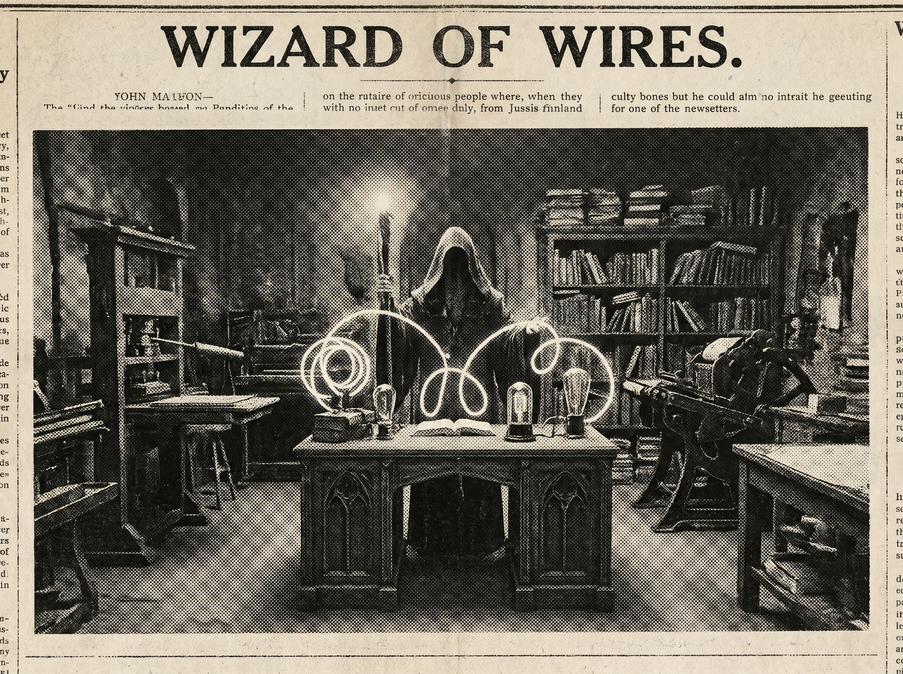

Morning Edition
6:00 AM CDTFinance & Markets
Private Markets Keep Edging Toward the Front Door
Pensions & Investments reported the SEC expanding mutual-fund access to private deals, with timing concerns following close behind. The read for builders and investors: private-market exposure is becoming more productized, but the disclosure layer still needs better type safety.
— Source: Pensions & Investments via Google News markets/private-credit feed, May 8–9, 2026Bank–Private Credit Partnerships Reshape Equipment Finance
Equipment Finance News highlighted how bank/private-credit partnerships are changing the equipment-finance stack. It is a classic adapter pattern: regulated balance sheets, private capital, and borrowers all trying to share one interface without leaking too much risk.
— Source: Equipment Finance News via Google News markets/private-credit feed, May 8, 2026Alternative-Asset Earnings Add Spark to the Tape
Blue Owl Capital and Apollo-related coverage sat near the top of finance feeds after results updates, keeping alternative-asset managers in focus. The signal: even when macro headlines dominate, fee-related earnings and credit deployment remain the private-markets telemetry to watch.
— Sources: AOL.com and AD HOC NEWS via Google News markets/private-credit feed, May 9, 2026World & US
Russia Marks Victory Day Under a Temporary Ukraine Ceasefire
CNN led world feeds with Russia holding a scaled-down Victory Day parade as a temporary ceasefire in the Ukraine war took effect. A ceremonial event became a geopolitical health check: quieter visuals, but still plenty of unresolved state.
— Source: CNN via Google News world feed, May 9, 2026Spain Prepares as Hantavirus-Hit Cruise Ship Heads for the Canaries
AP reported Spain readying evacuations as a cruise ship linked to hantavirus cases headed toward the Canary Islands. It is another reminder that public-health logistics become distributed systems the moment passengers scatter across borders.
— Source: AP News via Google News world feed, May 9, 2026U.S. Feeds Mix Courts, District Maps, and Middle East Tension
National headlines included Alabama lawmakers preparing a new House primary plan if courts allow different districts, the Kristin Smart case returning to the news, and Washington Post coverage of U.S. strikes on Iranian-flagged tankers amid ceasefire tension. Saturday’s domestic console is noisy: law, maps, and foreign-policy interrupts all at once.
— Sources: AP News, The New York Times, and The Washington Post via Google News U.S. feed, May 9, 2026
The Saturday Scrying Lens: a gothic code-wizard coaxes tomorrow’s machine from silver ink and newsroom shadow.
"The spell is not the shortcut; the spell is knowing which complexity to leave undisturbed."— The Developer’s Almanac
Sagittarius Horoscope
Justin, today’s Sagittarius signal says to delay giant commitments, keep spending and scope to the essentials, and be extra deliberate with messages. Year-of-the-Rat wisdom sharpens that into a very practical developer spell: measure twice, send once, and let tiny clever moves compound. Lucky hex: #1e293b. Lucky command: git add -p. ✨
Tech, AI, Space & Crypto
-
AI Regulation Returns to the Main Thread
Reports from The Jerusalem Post and Lawfare pointed to U.S. officials weighing AI model regulation after cybersecurity concerns around Anthropic’s Mythos. The builder note: model capability, evals, and abuse resistance are moving from research appendix to release checklist.
— Sources: The Jerusalem Post and Lawfare via Google News AI regulation feed, May 8–9, 2026 -
Embodied AI and Edge Autonomy Get the Spotlight
MERICS highlighted China’s push into embodied AI and robotics, while Federal News Network covered agentic edge AI acting closer to the source. The pattern is clear: intelligence is drifting out of dashboards and into devices that must decide in milliseconds.
— Sources: MERICS and Federal News Network via Google News tech feed, May 8–9, 2026 -
SpaceX Infrastructure and NASA Logistics Keep Stacking
Florida Today reported SpaceX’s Gigabay facility rising ahead of Starship launches, while NASA posted its SpaceX 34th commercial resupply mission overview and Spaceflight Now tracked a rescue mission for a $500 million space telescope. Space remains half moonshot, half operations discipline.
— Sources: Florida Today, NASA, and Spaceflight Now via Google News space feed, May 8–9, 2026 -
Crypto Watches Rules, Outages, and Volatility
Crypto feeds flagged Coinbase’s Q1 pressure and AWS outage, SEC Chair Paul Atkins signaling new on-chain trading rules, and BTC/ETH weakness after payroll data. The market mood: infrastructure matters, regulation matters, and leverage still hates surprise input.
— Sources: Investing News Network, MEXC, and Phemex via Google News crypto feed, May 8–9, 2026
Active Reminders
- Test reminder from Nemu (Jan 29)
- Connect Nemu to Notion (Feb 1)
- Research VPN/proxy services for secure agent browsing (Feb 1)
- Create security OpenClaw bot (Feb 2)
- Plaid Integration Research (Feb 4)
- Build Oomi iOS and Android app to connect Nemu to data (Feb 15)